| |
JAPAN 2018!!! =)
Osaka Universal Studios Japan Parque Espana Nagashima Spaland
Hiroshima & Kyoto Tobu Zoo
Fuji-Q Highlands
Tokyo Joypolis Tokyo Dome City Yomiuriland Sea Paradise Hamanako Pal Pal Tokyo Disney Resort Yokohama Cosmoworld
Toshimaen
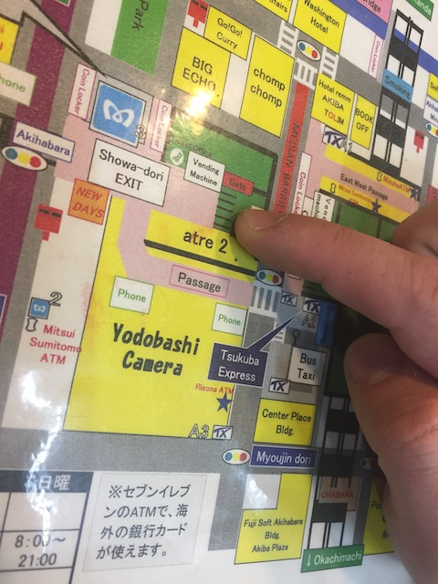
All right. After another SUPER EARLY morning, we drag ourselves out of bed, walk outside, and make our way to this spot. I wonder what for?
That's right. After days of stressing out over fastpasses, opening times, and making sure that we have the best possible day at a park that gets reviews similar to La Ronde, it's finally time to head on over to Fuji-Q!
Get comfy everyone. We've got a 2 hour bus ride ahead of us.
All right. Off the bus everyone.
 Oh boy. We made it to Fuji-Q. This is a park I've both been looking foreward to and dreading for years. *Sigh* Let's see how this park is.
Oh boy. We made it to Fuji-Q. This is a park I've both been looking foreward to and dreading for years. *Sigh* Let's see how this park is.
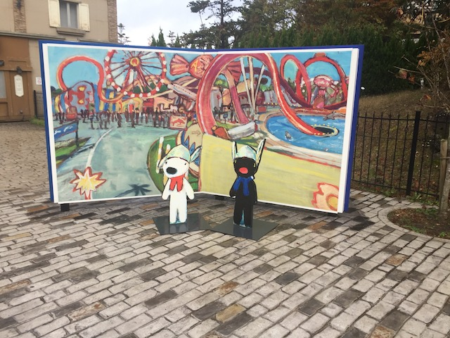
Wait. That's not Fuji-Q! F*ck! We're at the wrong park guys!
Oh wait. There's Dododonpa on the vending machines! Never mind!
Today's Fanta flavor is Fanta Peach. Again, really wish they had this flavor back in the US (Melon is better though).
You see how empty the ticket line is? That's not because it's an empty day. We just got here SUPER early to avoid the crowds.
Hope you like the view of the front gate, we're gonna be waiting here for at least an hour.
Well, at least I can use this as an excuse to catch up on some reading. Who knew the Fuji-Q English brochure was so interesting.
Well, glad we beat the crowds. Wait. Why do they have umbrellas!? SH*T!!!
Well, we got our ticket. Time to head on into Fuji-Q.
WE CAN'T BUY FASTPASSES FOR ANY OF THE RIDES!!!? YOU GOTTA BE F*CKING KIDDING ME!!! >=(
OK. I've been here for about 20 minutes, and I'm not gonna lie. I am NOT impressed so far. So far, Fuji-Q is on track to earning its reputation as a park in the same category as La Ronde and Mt. Olympus.
IT'S NOT EVEN RAINING THAT HARD!!! I'VE SEEN CEDAR POINT OPERATE IN HEAVIER RAINS!!!
And of course, we're not the only ones standing around waiting for one of the major coasters to open on up.
 *Sigh* Not impressed.
*Sigh* Not impressed.
Look. I get that we need rain. It's super important for the enviroment and cliff jumping. The world needs it, but just wait till after today cause...this is the Fuji-Q day. The one day where we gotta have dry weather conditions.
HOLY SH*T!!! THEY OPENED TAKABISHA!!! =)
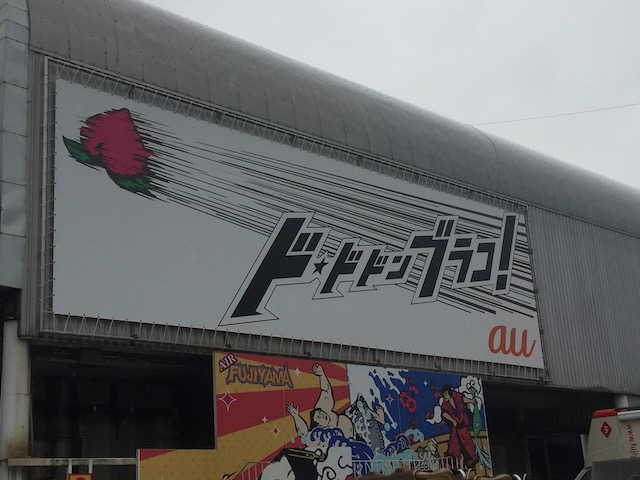
Happy to be finally riding one of the major Fuji-Q coasters.
One thing to know about Fuji-Q. They take your photo when you are let in the park, and then they scan your face whenever you want to ride a ride if you get the all day pass (Seriously, get it.). Kind of weird at first, but you get used to it fairly quickly.
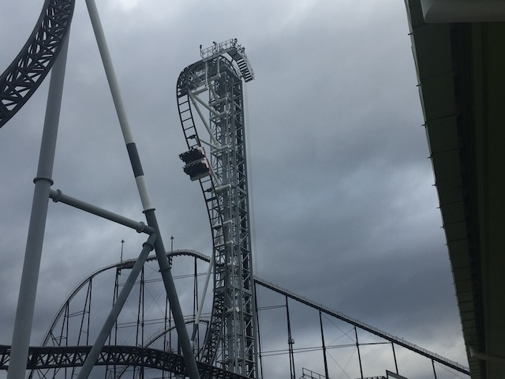
So Takabisha is the coaster I was looking foreward to the least out of the 4 major Fuji-Q coasters, but I still have to say. It was pretty good.
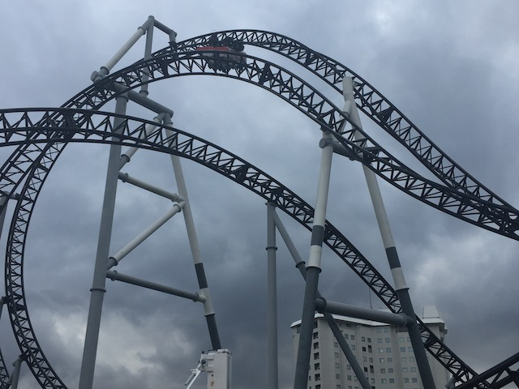
OK. So this ride is no Fluch von Novgorod, but considering how good the theming is on that ride, that's totally understandable. It's still a really good ride and my 2nd favorite Eurofighter, beating out both Mystery Mine and HangTime.
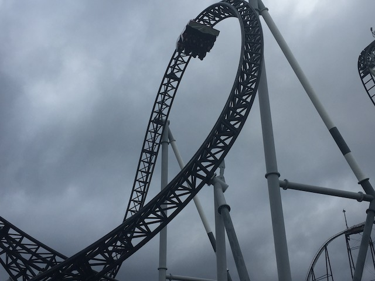
Sure, it may be a little rough around the edges, and I wish the ride just had lapbars, but the layout is still really good.
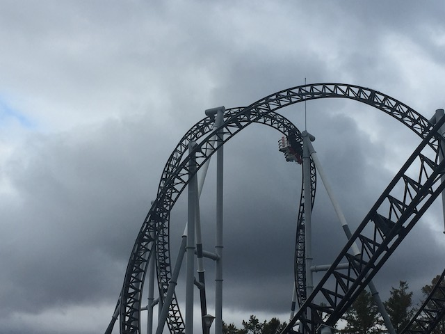
BANANA ROLL!!! Seriously, that element is a ton of fun. =)
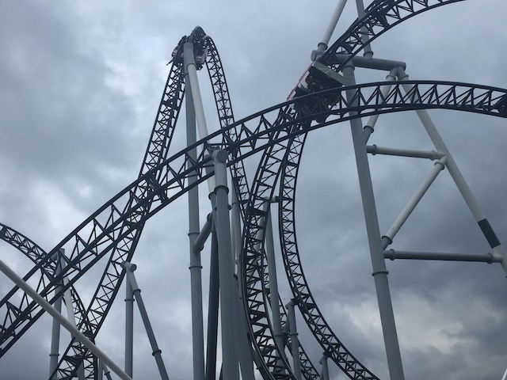
I'm looking foreward to the clone of this coming to that Nickelodeon Indoor Park in New Jersey for 2020 (Remember what I said about lap bars please).
YAY!!! ALL THE RIDES ARE STARTING TO OPEN BACK UP!!!
Time to start buying all the fastpasses for the rides! GET THEM NOW!!!!
Always good to see giant frisbees popping up. These rides are fun.
 DUDE!!! THE MAD MOUSE JUST OPENED UP!!! GET IN LINE FOR IT RIGHT NOW!!!
DUDE!!! THE MAD MOUSE JUST OPENED UP!!! GET IN LINE FOR IT RIGHT NOW!!!
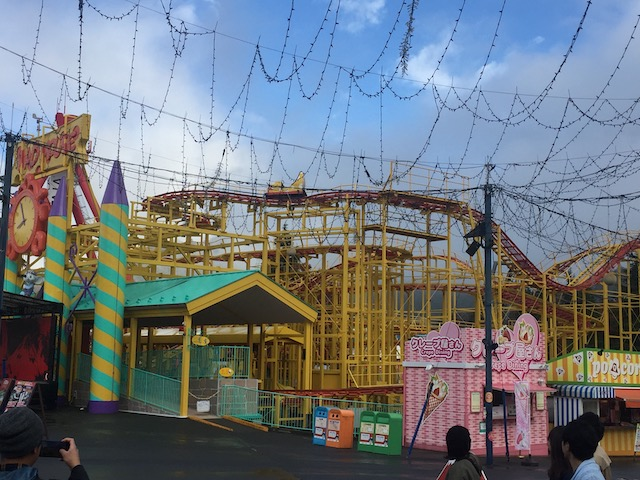
This was one of those credits, where I genuinely thought I was probably not gonna get this credit today thanks to the operations and prioritizing major coasters. So this was something that I didn't actually think I'd ride. But...hey! Credit whore Kevin is very happy today. =)
 Yeah. The capacity on this thing is AWFUL. We got SO lucky in the timing of this ride cause we probably wouldn't have ridden it and dealt with the line otherwise.
Yeah. The capacity on this thing is AWFUL. We got SO lucky in the timing of this ride cause we probably wouldn't have ridden it and dealt with the line otherwise.
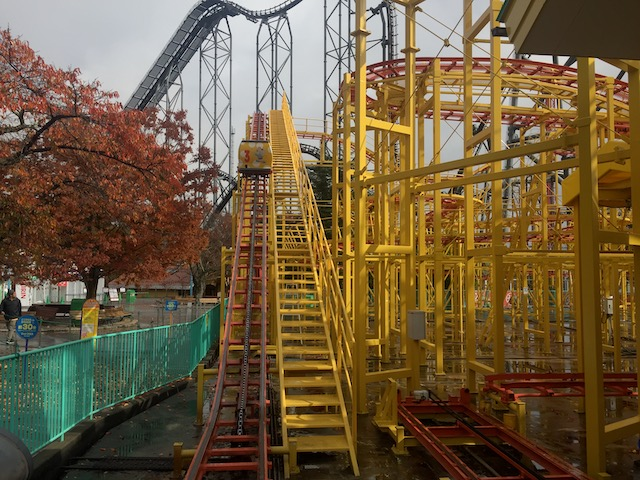
So yeah. This ride isn't bad per se. It's not painful at all. It's just really really awkward.
 Imagine if an 8 year old got RCT for the first time, and had never seen a Wild Mouse in their life. So when they decide to build a Wild Mouse, it just sort of meanders and turns its way to the ground, not resembling any Wild Mouse in the world. That's pretty much what the Fuji-Q Mad Mouse is like in real life.
Imagine if an 8 year old got RCT for the first time, and had never seen a Wild Mouse in their life. So when they decide to build a Wild Mouse, it just sort of meanders and turns its way to the ground, not resembling any Wild Mouse in the world. That's pretty much what the Fuji-Q Mad Mouse is like in real life.
Hey look! A bunch of fully grown men in the childrens area of a foreign country. Nothing to see here.
 Yep. Might as well knock all the credits out of the way while the crowds are still light.
Yep. Might as well knock all the credits out of the way while the crowds are still light.
Even by kiddy coaster standards, this was awful. But at least we got the credit.
 You know what? This rapids ride pretty much perfectly sums up the problems Fuji-Q has as a park. Primarily the fact that this park doesn't give a FLYING F*CK about capacity. They took a Wild Mouse, a ride that already is low capacity, and somehow halved the number of trains they run and halved the number of people the cars seat, and yeah. Even on the big coasters for the most part. Takabisha, Gerstlauer Eurofighter, generally something made for small parks and not with great capacity. Dododonpa (I love that thing), not a coaster with very good capacity. Even Eejanaika, a coaster with not the best capacity, and thanks to so many more safety checks, it really makes the operations drag. The only major coaster at Fuji-Q that has decent capacity is Fujiyama. It's not that Fuji-Q has bad operations. Being at the park, employees here bust their ass just as much as all the other parks in Japan and all the parks that I praise when I talk about good operations. That's not the problem with Fuji-Q. What makes the Fuji-Q operations are two things. #1. Unnecesarry safety checks. Fun fact. The operators at Eejanaika are much faster than at X2. But because they have to take so many unnecesarry steps to dispatch the train, X2 gets dispatched more quickly than Eejanaika, despite the speed of the operators. #2. The park KEEPS INVESTING IN THESE LOW CAPACITY RIDES!!! Mad Mouse, Takabisha, (as much as I love it), Dododonpa, and that brings me to this rapids ride. Yeah. It looks really cool and very fun. But HOLY SH*T!!! That has to be the WORST capacity I've ever seen on a rapids ride (And no, I didn't ride it). It just seems to be the ride that best describes Fuji-Q.
You know what? This rapids ride pretty much perfectly sums up the problems Fuji-Q has as a park. Primarily the fact that this park doesn't give a FLYING F*CK about capacity. They took a Wild Mouse, a ride that already is low capacity, and somehow halved the number of trains they run and halved the number of people the cars seat, and yeah. Even on the big coasters for the most part. Takabisha, Gerstlauer Eurofighter, generally something made for small parks and not with great capacity. Dododonpa (I love that thing), not a coaster with very good capacity. Even Eejanaika, a coaster with not the best capacity, and thanks to so many more safety checks, it really makes the operations drag. The only major coaster at Fuji-Q that has decent capacity is Fujiyama. It's not that Fuji-Q has bad operations. Being at the park, employees here bust their ass just as much as all the other parks in Japan and all the parks that I praise when I talk about good operations. That's not the problem with Fuji-Q. What makes the Fuji-Q operations are two things. #1. Unnecesarry safety checks. Fun fact. The operators at Eejanaika are much faster than at X2. But because they have to take so many unnecesarry steps to dispatch the train, X2 gets dispatched more quickly than Eejanaika, despite the speed of the operators. #2. The park KEEPS INVESTING IN THESE LOW CAPACITY RIDES!!! Mad Mouse, Takabisha, (as much as I love it), Dododonpa, and that brings me to this rapids ride. Yeah. It looks really cool and very fun. But HOLY SH*T!!! That has to be the WORST capacity I've ever seen on a rapids ride (And no, I didn't ride it). It just seems to be the ride that best describes Fuji-Q.
All right. Enough whoring around. It's time to do some of the major coasters.
 That's right. Time to ride Eejanaika! =D
That's right. Time to ride Eejanaika! =D
Just so have an idea about what the layout of Eejanaika is.
I see that the locals are really enjoying Eejanaika. =P
 Suddenly, I feel like I'm back home for some strange reason. ;)
Suddenly, I feel like I'm back home for some strange reason. ;)
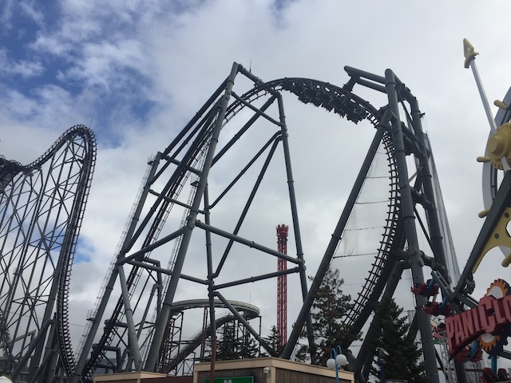
Let me just say this. Eejanaika is X2 on steroids. So yeah. THIS RIDE IS F*CKING AMAZING!!! =D
 If you think the Half-Half on X2 is crazy, the Full-Full on Eejanaika really will mess with you.
If you think the Half-Half on X2 is crazy, the Full-Full on Eejanaika really will mess with you.
 Unlike on X2, this part of the ride is not a breather moment. There are NO breather moments on Eejanaika. EVERYTHING is crazy. >=)
Unlike on X2, this part of the ride is not a breather moment. There are NO breather moments on Eejanaika. EVERYTHING is crazy. >=)
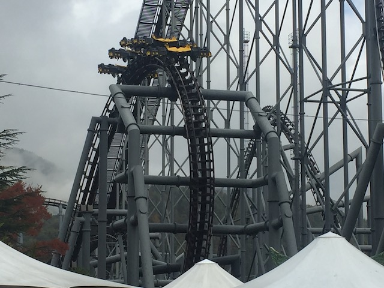
Much like with X2, that last Raven Turn will f*ck you up, and you will love it.
This ride is so good. You're totally gonna see this on our Top 10 Steel Coasters List.
 Time for another major Fuji-Q coaster. Yep. It's Fujiyama time. =)
Time for another major Fuji-Q coaster. Yep. It's Fujiyama time. =)
Oh sh*t. This is a Togo Hyper? F*ck.
 Well, the trains look nice. They're very roomy and look like they have a lot of room for airtime.
Well, the trains look nice. They're very roomy and look like they have a lot of room for airtime.
 I know this was the tallest coaster in the world for a while (until Goliath @ SFMM came). So this is a pretty big ride.
I know this was the tallest coaster in the world for a while (until Goliath @ SFMM came). So this is a pretty big ride.
A quick overview of what this ride does.
GOD DAMN!!! This ride is f*cking FUN!!!
This ride not only has some really good speed, but also has a lot of airtime, and even a couple of weirdly aggressive coat-hangerish laterals (They're really fun).
Who knew that one of the better hyper coasters out there was f*cking Fujiyama. Super underrated ride.
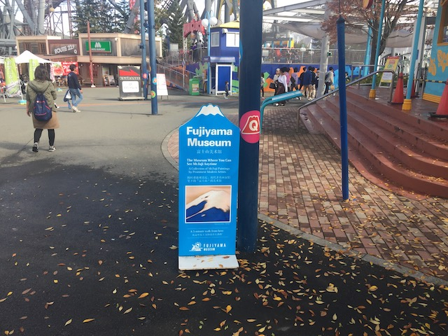
*gasp* There's a Fujiyama Museum!? WE GOTTA CHECK THAT OUT!!! =O
Hey Logan. Tell me again just how much you love Evangelion. ;)
Well, it's that time of day again. Lunch time.
Meh. Nothing great about this pizza place. But...at the same time, nothing terrible about it either. I know I heard people complaining about this resteraunt, but...it's not that bad. Not great, but...it'll do.
Where are we again?
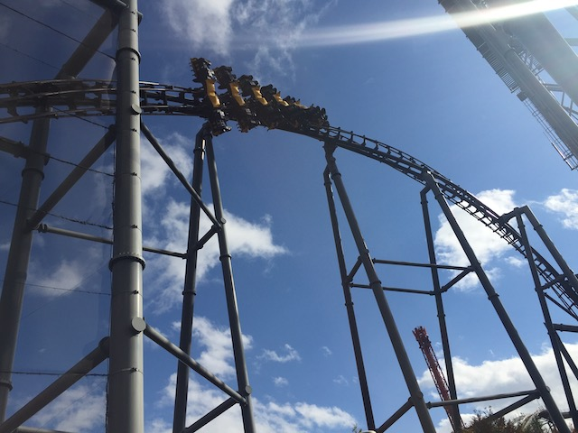
Yeah. We're just hanging out, getting a ton of Eejanaika shots.
Here, check out the Eejanaika shots that we got at Fuji-Q today (and even see a little bit of Logan going crazy too).
I absolutely love the logo they have for their Splash Boat.
 This may look like just an ordinary park carousel, but...
This may look like just an ordinary park carousel, but...
 It's about time someone took a moment to think about the poor dogs. They need rides to ride too! #DogRidesMatter
It's about time someone took a moment to think about the poor dogs. They need rides to ride too! #DogRidesMatter
 Yeah. No more waiting around. Time to get on Dododonpa.
Yeah. No more waiting around. Time to get on Dododonpa.
Dododonpa has at least a 2 hour line, but thanks to fastpass, that's not a problem (SERIOUSLY!!! WORTH EVERY YEN!!!).
So in the Dododonpa station, they keep playing this music video where the song is super catchy, and I can't think of this song without thinking of Dododonpa (The music video is on YouTube).
 HOLY SH*T!!! DODODONPA IS AMAZING!!!
HOLY SH*T!!! DODODONPA IS AMAZING!!!
 The launch on this thing is f*cking INSANE!!! It's like crashing into a brick wall at freeway speeds. Only accelerating that quickly instead of decelerating that quickly.
The launch on this thing is f*cking INSANE!!! It's like crashing into a brick wall at freeway speeds. Only accelerating that quickly instead of decelerating that quickly.
 Recently, they changed Dododonpa and replaced the Top Hat with a giant vertical loop.
Recently, they changed Dododonpa and replaced the Top Hat with a giant vertical loop.
 I kind of wish I got to experience the top hat since....I heard stories about ejector air so strong it f*cking hurt. But at the same time, the loop is really cool. It's very...Full Throttle-esque.
I kind of wish I got to experience the top hat since....I heard stories about ejector air so strong it f*cking hurt. But at the same time, the loop is really cool. It's very...Full Throttle-esque.
Yeah. Dododonpa makes Xcelerator feel like freaking Pony Express!
One thing to note about Dododonpa. This ride is bouncy. Not bouncy as in rough, but....you just sort of feel it bounce. It's hard to describe. You'll know what I'm talking about when you ride it.
 Thank you everyone for buying onride photos since....I NEVER buy them. So actually seeing some onride photos of me on Japanese coasters is really cool. =)
Thank you everyone for buying onride photos since....I NEVER buy them. So actually seeing some onride photos of me on Japanese coasters is really cool. =)
Hmm. Something's wrong with Dododonpa on the Fuji-Q cookies (Yeah. That's a thing at almost all the major Japanese parks).
FUJI-Q DOUGHNUTS!!? WANT!!! =)
All right. Time to make more use of our fastpasses and get another ride on Fujiyama in (I wish I shot video here as everyone was waving to us on this train).
 Yeah. The straight track between the lift and the first drop is awkward, but that first drop is really fun.
Yeah. The straight track between the lift and the first drop is awkward, but that first drop is really fun.
 The drops on here may not be steep, but they both give a lot of speed and ejector airtime.
The drops on here may not be steep, but they both give a lot of speed and ejector airtime.
Who would've guessed that we'd have this good of a day at f*cking Fuji-Q!?
*Sigh* DAMN YOU HAMSTER COASTER (I know it has a new name now. But I'm still calling it that)!!! YOU NEVER OPENED UP AFTER THE RAIN THIS MORNING!!! GAH!!!
Though in all seriousness, I went into Fuji-Q fully expecting to miss credits. I knew I wanted to try and get them all, but hearing all the horror stories of the park, the ultimate goal was to just ride the 4 main coasters. I was fully ready to leave without riding the Mad Mouse, the Hamster Coaster, and the kiddy coaster. So getting all the four main coasters plus two bonus coasters is very satisfactory (I'm still amazed at how lucky we were to get the Mouse credit without suffering through a horrendous wait). Only missing the Hamster Coaster is better than expected and no big deal.
Gee. I wonder if the Hamster Coaster supports need dusting.
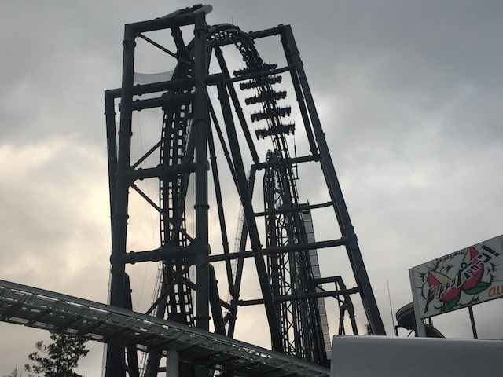
Have I mentioned that I love Eejanaika?
These Crunkys are really good. They're sort of like chocolate covered green tea balls. I know I'm not a huge green tea fan, but these things are really f*cking good.
OK. Whenever Dododonpa launches, this air compressor just goes BOOM!!! It's actually really cool to watch. =)
Ryan making love to the Dododonpa support, complete with Logan licking it. These two truly are coaster idiots. =P
 And right after getting all our Dododonpa shots and using all our fastpasses, it starts to rain again, and sure enough, EVERYTHING closes. HOLY SH*T!!! I think we f*cking swallowed a leperchaun with all the good luck we've had at this park given the horror stories of everyone else.
And right after getting all our Dododonpa shots and using all our fastpasses, it starts to rain again, and sure enough, EVERYTHING closes. HOLY SH*T!!! I think we f*cking swallowed a leperchaun with all the good luck we've had at this park given the horror stories of everyone else.
The only thing that's still dissapointing about today is the fact that Mt. Fuji was never visible today. Bummer (Spoiler Alert. I did get to see the mountain in Japan later on).
The coasters may be down, but at least we can still ride some flat rides now.
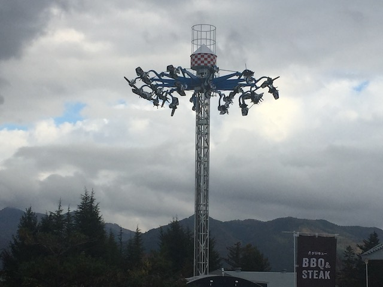
So after failing misrably at getting these to flip at Bakken, I decide to give these things another try. While these things are still touchy and complicated, I at least got better and made it flip more (Even if I still really suck). I honestly really want one of these built at either SFMM or KBF so I can get a ton of practice on this ride and maybe then actually get these rides to go insane.
I think some ariel shots of Fuji-Q are in order.
I know a certain someone wants to be in that ferris wheel with me. ;)
Fuji-Q from the Big Wheel.
No!!! Please don't paint Dododonpa pink!!!
 This is a really bad idea. Remember what happened when Burger King released a Black Whopper for Halloween?
This is a really bad idea. Remember what happened when Burger King released a Black Whopper for Halloween?
NO!!!! I DON'T WANT TO GO HOME YET!!! THERE'S SO MUCH MORE OF JAPAN I HAVE TO SEE!!!
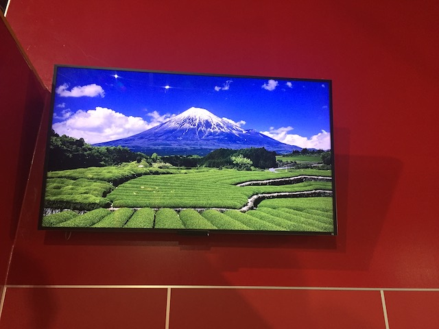
Hey look! I did get to see Mt. Fuji after all! =P
"Ugh. Are these seriously the people who will be flying with us today? This job just keeps getting worse and worse."
So for those who don't know, we're riding Fuji Airways, which is essentially "Soaring Over Mt. Fuji". It uses the same technology as Soarin', and feels very similar. You get to see Mt. Fuji, Cherry Blossoms, traverse through bad weather, and all in all, it just is pretty cool. I'm glad I got to ride this.
 Doesn't matter now, but it's good to see that the coasters are running again.
Doesn't matter now, but it's good to see that the coasters are running again.
Ooh! I love all the lights that Fuji-Q has put up for the holidays.
 God damn! Slow down on all the Christmas stuff! November just BARELY begun. ;)
God damn! Slow down on all the Christmas stuff! November just BARELY begun. ;)
Is this dog just some french cartoon that I'm not familiar with, or is it just some dog that they're advertising in France and brought over to Japan?
I think Fuji-Q is getting inspired by Parque Espana, cause it looks like they want to turn themselves into Parque Francia. ;)
These lights may not be as good as all the lights I found at Tobu Zoo, but it's still really cool.
 Not today alcohol. Shockingly, you weren't necesarry today.
Not today alcohol. Shockingly, you weren't necesarry today.
Aww. Fujiyama is all lit up for LGBT Pride.
Enjoy your spleen-smashing laterals guys.
Well, I think I can safely say that we had a very successful day at Fuji-Q.
So long Fuji-Q. Your park is not perfect by any means, and there are plenty of things to fix. However, you were much better than I was anticipating, with fast-passes saving our ass (Again, BUY F*CKING FASTPASS), and the coasters here are amazing. Thanks for another really good day.
Well, Fuji-Q was fun, but we're now back right in the heart of Tokyo.
Hmm. I wonder what we're doing back in Akihabara again?
Look at all the resterauts they have here. Hold on! Maid Dreamin?
HOLY SH*T!!! WE'RE GONNA VISIT A MAID CAFE TONIGHT!!!
The original plan was to eat a full blown meal in the Maid Cafe, but some people didn't want to spend that much money since....yeah. Maid Cafes are NOT cheap places to eat. Though aww. That Bear Curry does look really good.
But hey. We're already here. And we gotta get something. So yeah. Time for ice cream.
They all looked really good. But I decided to go with the Bunny in the Forest Parfait. I know a certain someone who's gonna really like my bunny ears. =)
So yeah. The Maid Cafe was just a ton of fun. I know it's very touristy, but....f*ck it! They had fun with us too, and I don't regret it one bit.
The night is still young! Let's wander around Akihabara some more!
Aww. I know how much you love that plushies Logan.
Gee. Who knew that pet rocks were still a thing in Japan.
Who knew that just browsing around Don Quijote (the Target of Japan) would be so much fun (I really wish that they could've opened that Half Pipe on top of it that never opened up and is still SBNO to this day).
Tokyo Joypolis
Home
|